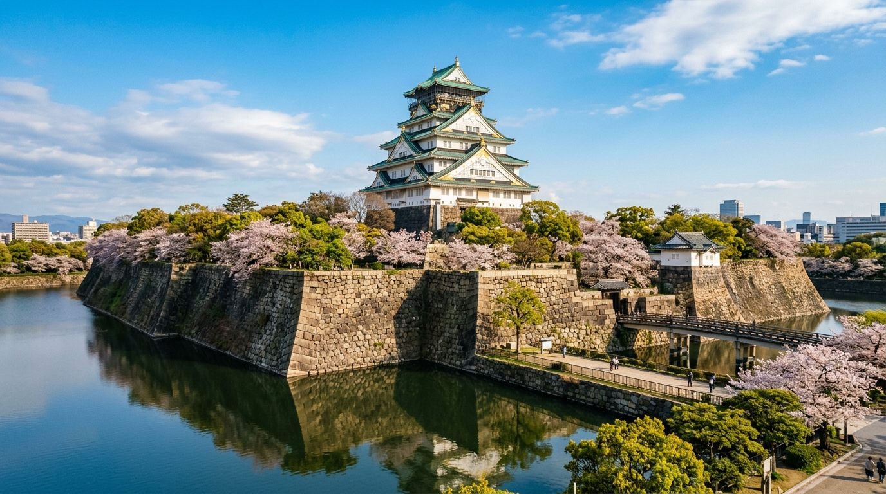
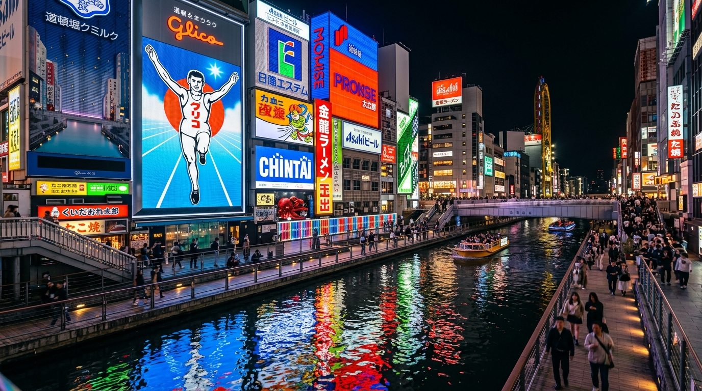
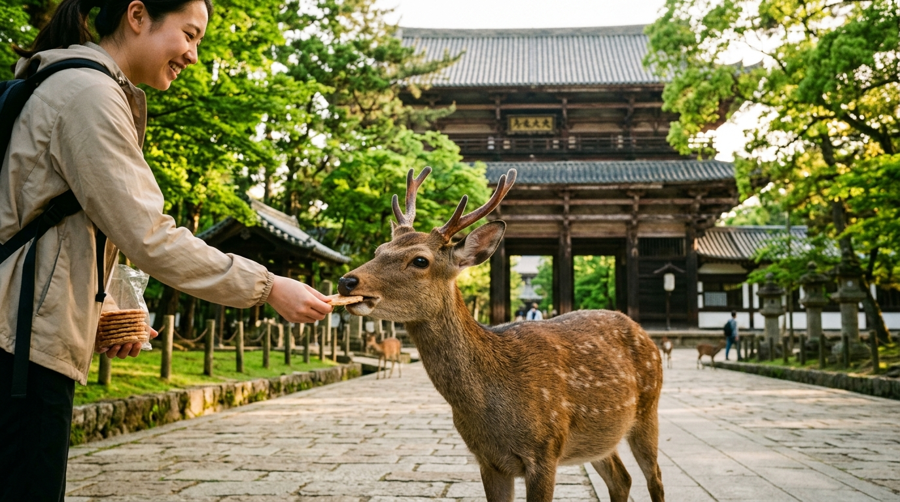
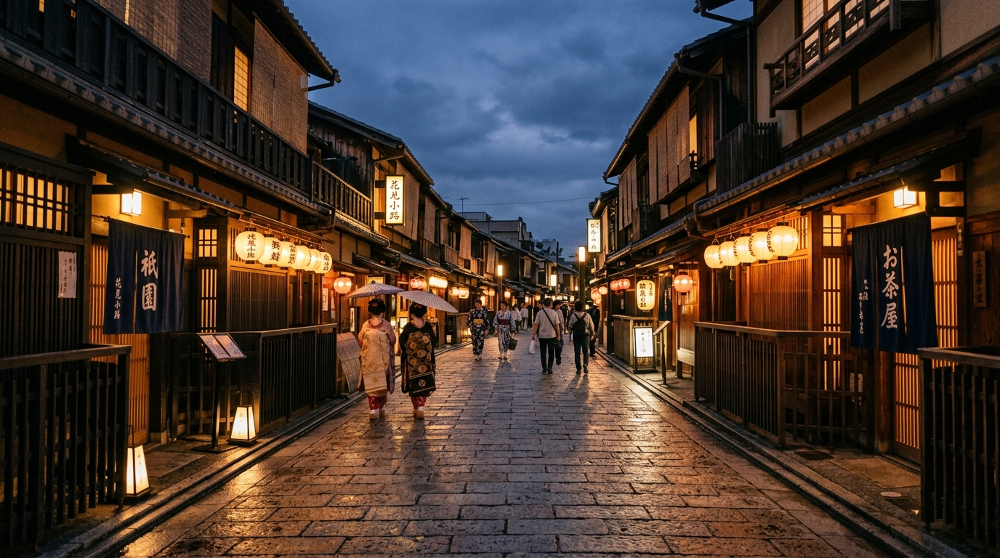
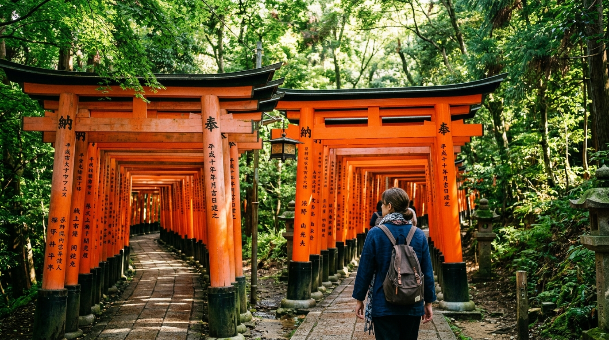
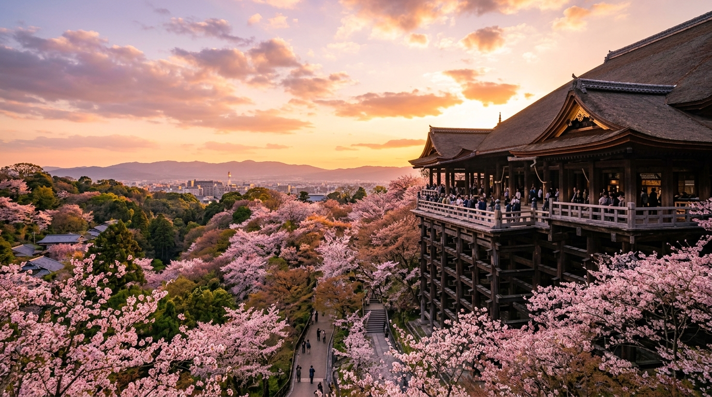

關西三城 千年與現代的交響
針對「週三深夜 23:00 抵達大阪」規劃的 4天4夜大滿貫簡報！除了 16 大觀光名勝與購物，更為您獨家規劃**和服體驗、抹茶茶道、居酒屋橫丁、清酒酒藏、USJ 環球影城與天然溫泉**等四大維度深度體驗！
4天4夜 跨城與市區交通車程全覽
大阪 ➔ 奈良 ➔ 京都 ➔ 關西機場，交通方式與時間一目了然
D0：關西機場 ➔ 大阪難波
南海電車【空港急行】直達 ~44 分鐘 (或利木津巴士 ~50 分鐘)。
D1：大阪市區地標巡禮
大阪地下鐵谷町線/御堂筋線，點對點車程約 10~20 分鐘。
D2：大阪 ➔ 奈良 ➔ 京都
近鐵奈良線 ~38 分鐘；近鐵/JR奈良至京都站 ~40 分鐘。
D3：京都古都景點移動
JR奈良線 5分鐘；京阪/嵐電/公車車程約 15~35 分鐘。
關西機場 ➔ 大阪難波 交通時間表
23:00 降落後至飯店 Check-in 的精確接駁車程
1. 關西國際機場 (KIX) 清關提取行李
辦理入境、提取行李（預估耗時 30~45 分鐘）。
2. 南海電車【空港急行】➔ 南海難波站
沿臨空城、堺站直達難波，票價 930 日圓。
3. 備選：深夜利木津巴士 ➔ 難波 OCATA
若過關延誤，由 T1 樓乘巴士直達難波/梅田。
大阪地標巡禮與點對點交通時間
地鐵御堂筋線/谷町線，方便快捷的市內交通指南
大阪城天守閣
地下鐵谷町線（谷町九丁目 ➔ 谷町四丁目）。
新世界 · 通天閣
地下鐵堺筋線（堺筋本町 ➔ 惠美須町）。
心齋橋 & 道頓堀
地下鐵御堂筋線（動物園前 ➔ 難波/心齋橋）。
梅田藍天大廈空中庭園
御堂筋線（心齋橋 ➔ 梅田）+ 步行 10 分鐘。
大阪 ➔ 奈良公園 ➔ 京都祇園 跨城車程
近鐵奈良線與近鐵/JR京都線的乘車時間指南
近鐵奈良線快速急行
大阪難波站直達近鐵奈良站。
近鐵奈良站 ➔ 奈良公園 ➔ 東大寺 ➔ 春日大社
公園內綠蔭步道徒步或乘奈良市內公車。
近鐵/JR 奈良 ➔ 京都站
搭近鐵特急 (35分鐘) 或 JR 奈良線 (45分鐘) 直達京都。
祇園花見小路 & 八坂神社
京都市公車 #206 或京阪電車至祇園四條。
京都四大景點間的移動車程
伏見稻荷 ➔ 清水寺 ➔ 嵐山 ➔ 先斗町 車程詳情
JR 奈良線 (京都 ➔ 稻荷)
搭乘 JR 奈良線普通車，2 站直達伏見稻荷。
京阪本線 + 步行
伏見稻荷站 ➔ 祇園四條站 (10分鐘) + 步行至清水寺。
阪急電車 / 京福嵐電
河原町 ➔ 桂 ➔ 阪急嵐山站 (或搭乘嵐電)。
JR 山陰本線 / 阪急電車
嵯峨嵐山 ➔ 二條/京都站，直達先斗町美食街。
錦市場 ➔ 四條河原町 ➔ 關西機場車程
搭乘 JR Haruka 特急直達關西國際機場 (KIX)
錦市場 & 四條河原町
地下鐵烏丸線（京都站 ➔ 四條站）+ 步行 3 分鐘。
返京都站取行李準備返程
搭地鐵或市公車回到京都站月台。
JR 關西機場特急 Haruka
京都站月台直達關西機場 1 樓，車程精確舒適。
大阪城天守閣 & 梅田藍天大廈空中庭園
戰國名城與現代摩天露天百萬夜景的完美對比

1. 大阪城天守閣 (Osaka Castle)
大阪最著名地標！由豐臣秀吉於 1583 年始建，陡峭巨石護城河搭配金箔雕飾的天守閣，雄偉壯觀。
2. 梅田藍天大廈 (Umeda Sky Building)
高達 173 公尺的雙塔建築，頂層以環形【空中庭園展望台】相連。穿過透明扶梯，可在 360° 露天平台迎風俯瞰大阪城與淀川璀璨夜景！
道頓堀水運河、心齋橋與新世界通天閣
沉浸在關西不夜城熱情洋溢的美食與霓虹光影中

3. 道頓堀 & 心齋橋
打卡世界聞名的【格力高霓虹跑者】！沿著水運河走廊走過，兩側全是立體螃蟹、章魚巨型招牌，空氣中瀰漫著烤章魚燒香氣。
4. 新世界 & 通天閣 (Shinsekai)
保留著濃郁昭和時代懷舊風情的老街！高聳的【通天閣】塔頂設有幸運神 Billiken 像，觸摸腳底據說能帶來好運。
5. 心齋橋筋商店街 (Shinsaibashi)
長達 600 公尺的有遮棚拱廊購物街。聚集藥妝店、日系服飾精品與大丸百貨，是採購潮流手信的最佳去處。
奈良公園神鹿、東大寺與春日大社
萬木清幽的古都天然公園與世界級木造建築遺產

6. 奈良公園 (Nara Park)
廣達 660 公頃的草木綠地中生活著 1,200 多頭野生梅花鹿。牠們被視為神的使者，聰慧討喜，甚至學會向遊客點頭求鹿仙貝。
7. 東大寺 (Todai-ji Temple)
世界最大木造建築！大佛殿內供奉 15 公尺高的盧舍那大佛，殿內圓洞大柱據說順利鑽過能祈求平安智慧。
8. 春日大社 (Kasuga Taisha)
參道兩側排列著 3,000 座古樸石燈籠，朱紅建築被茂密古樹環抱，充盈著神秘肅穆的禪意氛圍。
祇園花見小路、八坂神社與二年坂三年坂
漫步於石板坡道與町家木造建築間，感受最純正的藝妓古韻

9. 祇園 · 花見小路 (Gion)
京都最具代表性的花街。兩側保存著古色古香的茶屋與木造格子窗町家，黃昏時分燈籠點亮，常能瞥見藝妓的優雅身影。
10. 八坂神社 (Yasaka Shrine)
全日本八坂神社的總本社！舞殿上掛滿商家奉納的白色提燈，夜晚點亮時格外幽玄浪漫，是京都夜間參拜首選。
11. 二年坂・三年坂 (Historic Slopes)
通往清水寺的古老石板坡道。沿途開滿京都傳統手藝品店、抹茶小吃店與和服租賃店，穿和服拍照極具風情。
伏見稻荷千本鳥居與清水寺清水舞台
朱紅連綿的神域走廊與懸崖木造工藝的巔峰傑作

12. 伏見稻荷大社 · 千本鳥居
上萬座信徒奉納的朱紅鳥居沿山勢延伸，晨光透射下形成令人屏息的視覺走廊，被譽為關西最震撼的人文景觀之一。

13. 清水寺 · 清水舞台
懸空建造於崖壁上，依靠 139 根櫸木榫卯交錯支撐（不使用一枚釘子）。佇立舞台上可遠眺京都全景，四季景色皆美。
嵐山竹林小徑、渡月橋與先斗町鴨川
感受風吹竹葉沙沙聲與鴨川河畔居酒屋的微醺夜色
14. 嵐山竹林小徑 & 渡月橋
高聳入雲的綠竹密佈道旁，當微風吹過，竹葉撞擊出清脆清響。橫跨桂川的渡月橋背靠嵐山山巒，如同一幅清雅的山水畫。
15. 先斗町 & 鴨川 (Pontocho)
緊鄰鴨川的狹窄古老巷弄。聚集著各種古樸居酒屋、湯豆腐店與京料理。坐在川床或窗前邊賞鴨川水色邊品嚐特色美食。
京都廚房錦市場、四條河原町與臨空城
嘗遍上百家老字號道地小吃，滿載而歸採購特產伴手禮
享有“京都廚房”美譽！400年歷史老街，必吃章魚鵪鶉蛋串、現烤海鮮刺身、抹茶玉子燒與豆乳甜甜圈。
京都最繁華的購物中心！高島屋、大丸百貨與各大品牌 flag ship store 集中於此，選購高檔彩妝與工藝品。
關西機場前一站的超大型 Outlets！擁有多家國際大牌折扣店，是登機前的最後採購天堂。
關西三大主題購物商圈（替代方案）
隨時替換觀光景點，滿足血拼、藥妝、動漫與大牌採購需求
【梅田阪急百貨】全日本彩妝品牌最齊全！
【LUCUA & Yodobashi】潮流服飾與 3C 家電。
【心齋橋 PARCO】Nintendo Osaka & 寶可夢中心！
【日本橋電器街】關西動漫二次元聖地。
【Nintendo Kyoto】高島屋 7 樓旗艦店！
【Kyoto BAL】文青生活選品店與蔦屋書店。
【新京極 / 寺町通】遮棚商店街，採購和風工藝品、古著與日本文具。
【Porta 地下街】京都站內精致甜點伴手禮。
【臨空城 Outlets】關西機場前一站，匯聚 250+ 國際奢品與運動品牌，登機前掃貨。
【三井 Outlet 門真】大阪近郊最新 LaLaport 複合式購物中心！
關西 4 大特色體驗與文化娛樂靈感
和服茶道、深夜橫丁微醺、環球影城與日式溫泉大放鬆
傳統文化漫步
美食 DIY & 微醺
沉浸娛樂 & 樂園
溫泉療癒 & 錢湯
關西交通票券與地圖避坑貼士
精明省時省力的自由行秘訣
直接綁定 iPhone Apple Wallet 儲值，支持地鐵、私鐵、公車及全日本便利店。
適合乘坐 Haruka 特急往返京都與關西機場。
大阪往返奈良首選【近鐵】，大阪前往京都河原町首選【阪急電車】。
在日本搭乘電車請對照月台看板上的「月台編號 (Track Number)」，切勿搭錯方向。
預祝您關西旅程圓滿順遂！
大阪的繁華不夜城、奈良的靈動小鹿、京都的千本鳥居與竹林古韻，都將為您帶來難忘的假期！